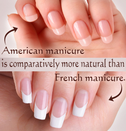

chapter18.1--handout
Background Information
Chaliapin Fedor Ivanovich（费多尔·伊万诺维奇·夏里亚宾（1873-1938））
俄国男低音歌唱家。被誉为世界低音之王，他是一位具有独创精神的艺术家，表演与人物、语言 和歌唱高度融合，嗓音洪亮，音域宽广，富有表现力。主演过电影《可怕的沙皇伊凡》和《堂吉诃德》，录有近 200张唱片，著有《我生活的一页》和《面具和人》等书。
Isadora Duncan（伊莎多拉·邓肯）
Isadora Duncan，美国舞蹈家，现代舞（Modern dance）的创始人，是世界上第一位披头赤脚在舞台上表演的艺术家。创立了一种基于古希腊艺术的自由舞蹈而首先在欧洲扬名。其后在德、俄、美等国开设舞蹈学校，成为现代舞的创始人。主要作品有根据《马赛曲》（La Marseillaise，法国国歌）、贝多芬（Beethoven）的《第七交响曲》（Seventh Symphony）、门德尔松(Mendelssohn)的《春》和柴可夫斯基(Tchaikovsky)的《斯拉夫进行曲》改编的舞蹈。著有《邓肯自传》和《论舞蹈艺术》。
Anna Pavlova(安娜·巴甫洛娃)
安娜·巴甫洛娃是20世纪初芭蕾舞坛（Ballet）的一颗巨星，她为芭蕾作出了无法估价的贡献。安娜·巴甫洛娃既牢牢扎根于古典芭蕾舞的沃土，又积极支持和参与了新芭蕾改革运动。正是这些因素造就了她的艺术特色和表演风格。安娜·巴甫洛娃也素有“芭蕾女皇”之称。1910年她组织了自己的小型芭蕾舞团开始在世界各地巡回演出。在长达二十年之久的旅行演出中，她到过44个国家，行程50万英里，演出数千场，观众不计其数，她一年要穿坏2000双足尖鞋Pointe shoes.
There, but for the grace of God, go I.
这句话看起来仿佛有些confusing，这是一句英文中的谚语，来自John Bradford (1510–1555)的遭遇：John Bradford是一位英国的改革家，他因为涉嫌在玛丽都铎（Mary Tudor）即位时 "trying to stir up a mob"（试图挑起暴乱）的罪名被关进了伦敦塔（the Tower of London），最终被以火刑烧死。
"There but for the grace of God, goes John Bradford"
这句话，就是对John Bradford最终受刑的感叹。
所以后来“There but for the grace of God, goes I.”这句话就被引申为这样的意思：
💧A recognition that others' misfortune could be one's own, if it weren't for the blessing of the Divine, or for one's luck.
💧Humankind's fate is in God's hands.
💧More generally, our fate is not entirely in our own hands.
总之呢，就是说人的命运，并非掌握在自己手中。也和卡叔今天论述的观点一致。
Vocabulary
iota
💧n. a tiny or scarcely detectable amount
💧There is not an iota of truth to that tale.
那个故事毫无真实可言
💧Nothing she said seemed to make an iota of difference.
她所说的似乎没有起丝毫作用。
bigoted
💧blindly and obstinately attached to some opinion and intolerant toward others
adj. 顽固的
💧a bigoted person
💧an outrageously bigoted point of view
handicap
💧the condition of being unable to perform as a consequence of physical or mental unfitness
n. 障碍，残障
💧Poor eyesight is a handicap to a student.
视力不好对学生来说是一个障碍。
💧Struggled to overcome the handicap and finally won.
努力克服困难最后终于成功。
Crush Your Problems
- You deserve very little credit for being what you are - and remember, the people who come to you irritated, bigoted, unreasoning, deserve very little discredit for being what they are.
💧deserve...值得/应得
You deserve very little credit for... 对于...你并没有什么功劳
这个句式也是特别实用的啦，如果你想要表达肯定的意味，可以说：
You deserve every credit for your contribution.
💧Come to you irritated, bigoted, unreasoning...这一系列形容词，表示的都是人的情绪状态，所以这个句子表示的就是，这些状态的人，也不是他们自愿这样的。
- "I sympathize with you- I know it won't be easy, but it will pay off in your better musical development."
💧sympathize with...表达同情
I do sympathize with you.
我的确很同情你。
They sympathize with critiques of traditional theory.
他们赞同对传统理论的批评。
💧pay off in...回报
这个句子的语气很委婉，算是表达sympathy的标准答案了：
我很同情你，我知道这么做很难，但是最终你的牺牲会有所回报的。 - "Self-pity" for misfortunes real or imaginary is in some measure, practically a universal practice.
💧self-pity自怜，自我怜惜/自怨自艾
这里的real or imaginary，算是插入语，真实或是想象
💧practically实际地、几乎、简直
Practically a universal practice：几乎是放之四海皆准，这样的意思啦～
Content Analysis
今天的内容中，卡叔详细的讲解了sympathy的效用，每一个人之所以成为现在的样子，不是因为他自己的主观意愿，而是客观的外在条件，打造了一个人：每个人如果经历过的是他人一样的事情，也很有可能做出同样的选择。甚至在第一章我们认识到的恶贯满盈的Al Capone，也是一样，我们如果经历过他的一切，难免不做同样的选择。卡叔下面又做了类比：只有父母不是响尾蛇，自己才不会是，也是同样的道理。
（The only reason, for example, that you are not a rattlesnake is that your mother and father weren't rattlesnakes.）
钢琴老师Joyce Norris的例子也说明了sympathy的重要性，学生Babette喜欢留长指甲，但是这个对于学钢琴有不好的影响，Joyce通过自己的sympathizing，婉转地和Babette说明了剪掉指甲对学钢琴的重要性，让她知道会从剪指甲这件事情上获得哪些收益，之后从未因别人Trim nails的Babette自觉剪掉了指甲，Joyce老师惊奇的发现，是sympathy起到了作用。
（"I sympathize with you- I know it won't be easy, but it will pay off in your better musical development."）
Sol Hurok管理艺人的方式也是这样，Sol旗下合作的歌唱家Chaliapin，用Sol的话说是"He was a hell of a fellow in every way."（各方面都是...让人绝望的选手...），Chaliapin说自己嗓子痛要罢工不去演出了，Sol并不像一般人一样去和他争论，而是积极的去安抚、关心他，体现自己的sympathy（然后暗搓搓的提醒他要扣钱的哦...），最终Chaliapin还是坚持去表演。
所以，如果你想要别人想你所想，首先要做到sympathetic（Principle 9 - Be sympathetic with the other person's ideas and desires.）
Today's Bonus
今天的钢琴老师教会了我们如何引导小公主听话做事情的正确打开方式，尤其是Babette决定剪掉自己的manicured nails，真的是很棒的sympathetic method～当然，manicure这类活动相信是大部分女孩子的心头好，闲暇时候找一位Beautician做一个美美哒manicure是很放松的事情，那么今天的彩蛋就教大家一下不同样式的manicure英文该怎么说吧～
- Basic Manicure
就是最日常的美甲方式，当你去Nail Salon的时候（美甲店，Salon就是法语词沙龙，表示各种院啊、店啊什么的，在莫奈高更的时代Salon也指上流社会social的场所；同样，美容院就是Beauty Salon，理发店就有些不一样哈，叫做Barber's，Barbershop，或者是Hairdresser's），想要说我就随意做个美甲，最常规的样式，你可以说：“I prefer a basic manicure.”
- French manicures
婚礼标配——法式美甲，英文很简单就是French manicures，也可以说是 "French tips"（因为只有指头尖尖涂白色的，其他部分都透明），有些指甲不够长的妹子可以选择 artificial（人工的） nails去做French Tips的效果哈～
- American manicure
另外一种被称为美式的美甲，看起来和French tips差不多，一些细微的差别就是这样啦👇
 - Gel Manicure
现在国内大部分人做的都属于是这个类别，甲油胶，持续时间更久一些，同样也更难卸掉（remove），不过为了美，都值得～
- Reverse French manicure
这个其实就很简单啦，顾名思义，就是把French manicure做一个reverse，反转过来，就好啦～（reverse还记得我们说是翻转的意思吗？比如汽车的R档，就是reverse gear.）
- pedicure
说过了手部的美甲，足部美甲也一样哈～认识一下这个词：pedicure（pedi-这个词根，表示和脚相关的），记住了吗？
smart word
今天感触最深的是卡叔说，给人以共情，"Three-fourths of the people you will ever meet are hungering and thirsting for sympathy. Give it to them, and they will love you."